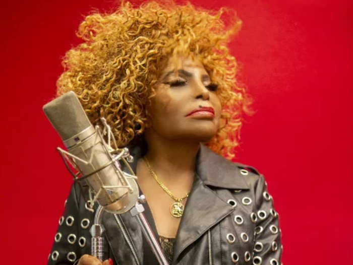

Personalidades na política, na música, nas artes, na literatura e no ativismo, muitas foram as pessoas negras que lutaram pela inserção social do povo negro no Brasil. Assim, reunimos uma lista de grandes mulheres e homens de várias gerações, que ajudaram de forma significativa na diminuição da desigualdade racial no nosso país.
Machado de Assis (1839-1908):
Foi considerado por muitos como o maior escritor brasileiro de todos os tempos, Joaquim Maria Machado de Assis teve uma origem difícil e, embora sua negritude tenha sido negada por muito tempo, hoje finalmente é reconhecido como um homem negro.
Aleijadinho (1738-1814):
Ícone do barroco brasileiro, Antônio Francisco Lisboa foi um importante escultor, entalhador e arquiteto do Brasil colonial. Durante o ciclo do ouro em Minas Gerais, Aleijadinho produziu suas obras especialmente em igrejas com o patrocínio de uma elite urbana. Suas obras se inserem no contexto da época: a Igreja Católica passava pelo momento de contrarreforma e foi nesse período que os jesuítas foram enviados ao Brasil para catequizar a população. Sendo assim, a produção das obras sacras contribuíram para reforçar a religiosidade. Através da arte, ele conseguiu projeção numa sociedade escravista, apesar de sua cor.
Mãe Menininha do Gantois (1894-1986):
Foi fundamental na luta pela aceitação e divulgação do candomblé no Brasil e convidou brancos e católicos para conhecerem o terreiro.
Milton Santos (1926-2001):

Nasceu na Bahia e, como era filho de professores, começou a dar aulas desde cedo, ainda com 13 anos. Depois de se formar em direito, fez doutorado na área que sempre despertou a sua paixão: a geografia.
Grande Otelo (1915-1993):
Foi um dos maiores das artes cênicas Brasileira no século XX. Os seus trabalhos, especialmente com Oscarito, fizeram muito sucesso no cinema.
Zumbi dos Palmares (1655-1695):
É por causa dele que no dia 20 de novembro é comemorado no Brasil o dia da Consciência Negra. Zumbi é o ícone da resistência negra à escravidão no Brasil. Último líder do Quilombo dos Palmares, na região da Capitania de Pernambuco, ele era responsável por uma comunidade formada por escravos negros que haviam escapado das fazendas, prisões e senzalas coloniais. Zumbi, depois de dar muita dor de cabeça aos portugueses, foi morto em 20 de novembro de 1696 e teve sua cabeça exposta no estado de Pernambuco para acabar com o mito da sua imortalidade.
Elza Soares (1930):
Elza Soares: Trabalhou como encaixotadora numa fábrica de sabão e se casou quando tinha apenas 12 anos. Ela fez o primeiro teste para a Rádio Tupi em 1953, no show de calouros do famoso Ary Barroso, e ficou em primeiro lugar.
Conceição Evaristo (1946):
Conceição Evaristo: A escritora e professora Conceição Evaristo é um dos maiores nomes da literatura brasileira contemporânea, sendo uma das grandes ativistas do movimento negro.
Lélia Gonzales (1935-1994):
Lélia Gonzales: É umas das maiores vozes femininas na luta pelos direitos do povo negro é a de. A ativista e intelectual se dedicou aos estudos de gênero e raça no Brasil e se tornou uma grande referência no país para pensar sobre o lugar que a mulher negra ocupa na sociedade.
▲